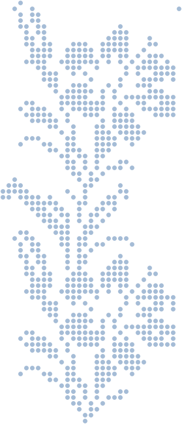
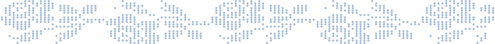

Imaging & Computer Vision
- Multimedia acquisition and representation
- Image analysis
- Computer vision
- Deep learning

Biomedical engineer graduated from Télécom SudParis, passionate about technology in the service of medicine.
Download my resume
Flomics develops liquid-biopsy solutions based on cell-free RNA. During my end-of-studies internship, I worked with gene expression data and developed machine-learning models to predict biological age from cell-free RNA.
Over several months, I collaborated with the research team at Genoscope, the CEA’s genomic sequencing centre, on the LAGE project, which studies the diversity of marine eukaryotes worldwide. My team and I took on one of their operational needs: automating the step that turns assembled contigs into genomes. I implemented an automated workflow that groups contigs into Metagenome-Assembled Genomes (MAGs), using Answer Set Programming rules combined with optimisation criteria.
Hosted by the IMT Starter incubator, I joined a team of researchers seeking to turn a medical device into a start-up: an optical-fibre pressure-sensing patch (Fibre Bragg Grating sensors) paired with a real-time visualisation interface for prosthetic applications.
The programme concluded with a pitch to a jury of banking, investment and entrepreneurship professionals, simulating a fundraising round.
Ingénieure biomédicale diplômée de Télécom SudParis, passionnée par la technologie au service de la médecine.
Télécharger mon CVFlomics développe des solutions de biopsie liquide fondées sur l’ARN circulant. Lors de mon stage de fin d’études, j’ai travaillé sur des données d’expression génique et développé des modèles de machine learning pour prédire l’âge biologique à partir de l’ARN circulant.
Pendant plusieurs mois, j’ai collaboré avec l’équipe de recherche du Genoscope, le centre de séquençage génomique du CEA, sur le projet LAGE, qui étudie la diversité des eucaryotes marins à l’échelle mondiale. Mon équipe et moi avons pris en charge l’un de leurs besoins opérationnels : automatiser l’étape qui transforme les contigs assemblés en génomes. J’ai mis en place un workflow automatisé qui regroupe les contigs en génomes assemblés à partir de métagénomes (MAGs), grâce à des règles d’Answer Set Programming combinées à des critères d’optimisation.
Accueillie par l’incubateur IMT Starter, j’ai rejoint une équipe de chercheurs qui souhaitait transformer un dispositif médical en start-up : un patch de capteurs de pression à fibre optique (capteurs à réseaux de Bragg) associé à une interface de visualisation en temps réel pour des applications prothétiques.
Le programme s’est conclu par un pitch devant un jury de professionnels de la banque, de l’investissement et de l’entrepreneuriat, simulant une levée de fonds.